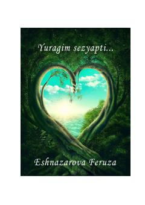

YSOg'ir sinovlarni yengib o'tgan qizning hayotiy va ta'sirli iqrorlari.
Muallif o'zining og'ir kasallikni boshidan kechirgani, hayotdagi sinovlar va qiyinchiliklarga qaramay umidni yo'qotmagani haqida hikoya qiladi. Kitobda insonning irodasi, ilm olishga bo'lgan intilishi va ruhiy tiklanish jarayoni ta'sirli tarzda yoritilgan.